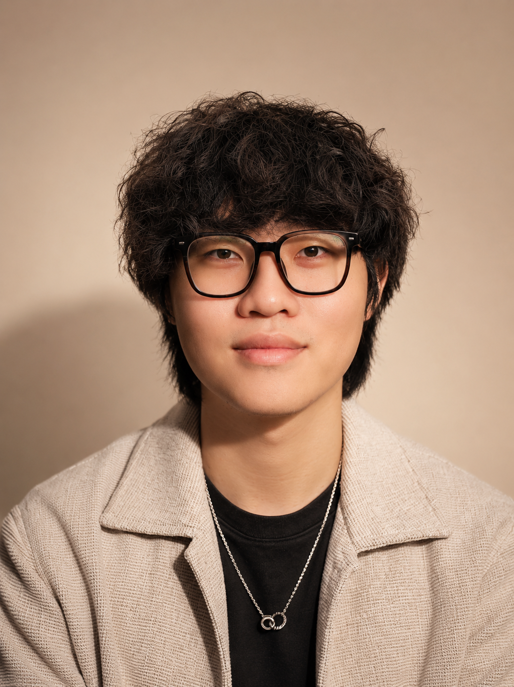
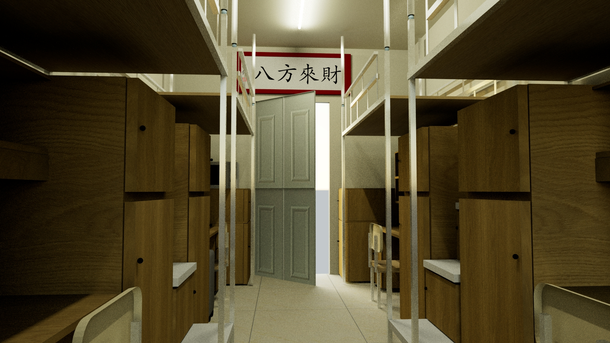
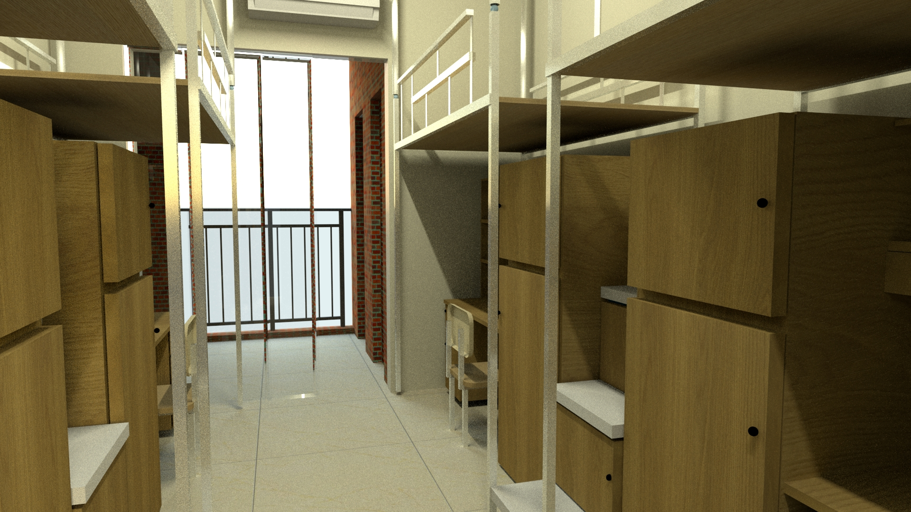
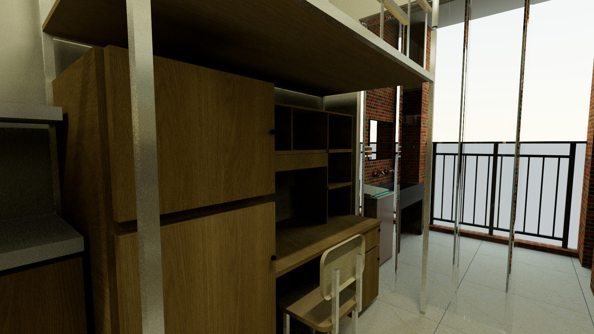
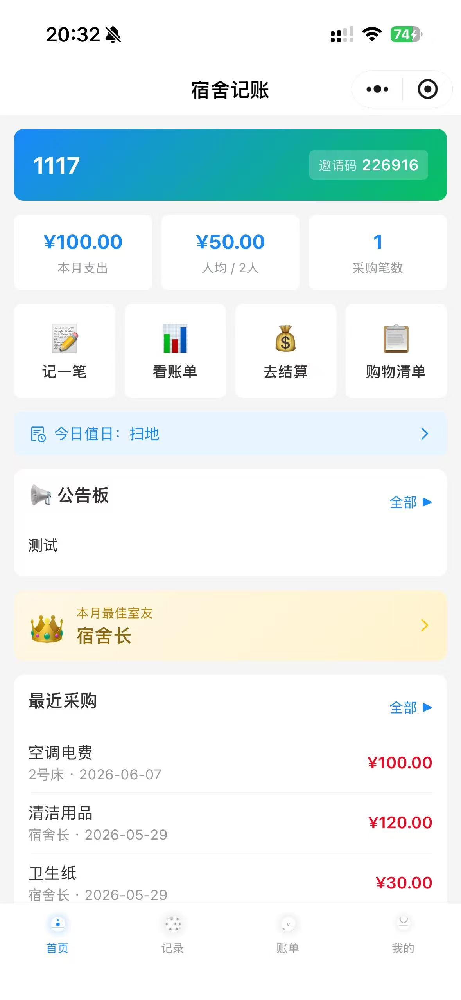
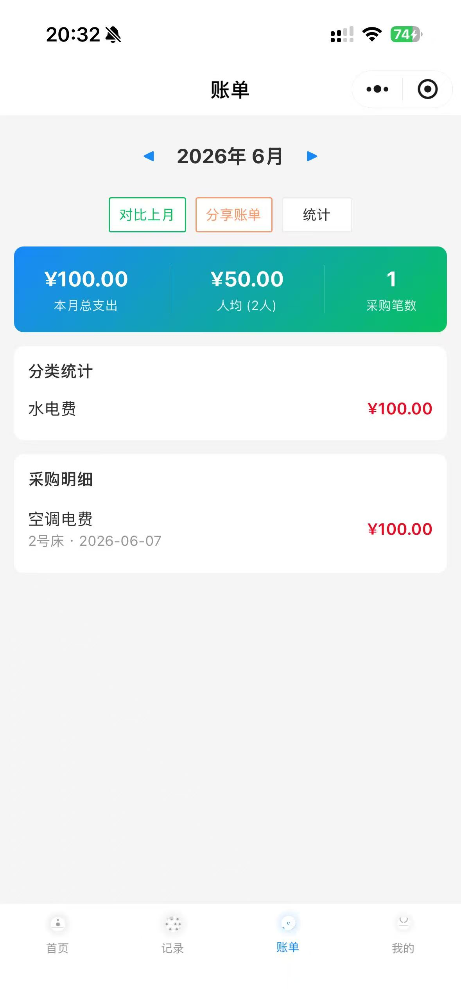
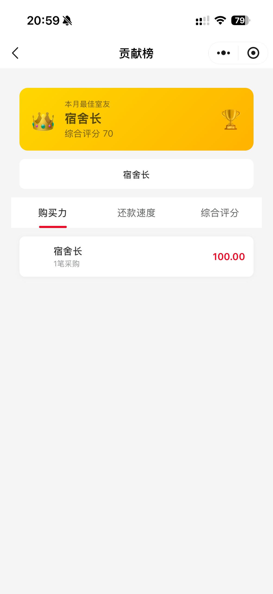

Digital Media Technology / Portfolio / Motion
用镜头剪出节奏 用三维搭起场景 让故事被看见
我是卢俊霖，数字媒体技术专业本科生。 熟悉摄影、视频剪辑、后期制作与 3D 场景建模，也在持续学习 AI 工具辅助创作。
Available
2026

04
精选作品
CET-4
英语四级
C2
驾驶证
Premiere Pro
3D Max
Photography
Premiere Pro
3D Max
Photography
After Effect
C4D
Figma
Photoshop
Lightroom
AI Workflow
Claude Code
DeepSeek
Film Editing
About
一个正在把影视创作、三维视觉和数字媒体技术连起来的人。
在校期间主修 3D 场景设计、影视创意设计、数字媒体后期制作、游戏项目策划等课程。 熟悉 3D Max、Photoshop、Illustrator、Lightroom、Premiere Pro、剪映等工具， 也自学 AutoCAD、SketchUp、酷家乐、D5 渲染器，并对 Claude Code、ChatGPT、Codex 等 AI 工具有实践经验。
Selected Works
精选作品






Experience
经历时间线
2024 - 2028
广州新华学院 / 数字媒体技术 本科
主修 3D 场景设计、影视创意设计、数字媒体后期制作、游戏项目策划等课程；在 3D 建模与影视剪辑方向表现突出。
2025.10 - 2026.02
《别等风停再奔跑》微电影 / 剪辑
五人小组课程作品，主要负责剪辑，并参与部分摄影及出镜；最终作品成为课程最佳作品。
2021 - 2024
东莞市第五高级中学 / 宣广组
负责校园活动摄影与视频后期制作，独立完成多场影像记录与剪辑工作，参与策划并执行校园宣传活动。
Skill System
能力矩阵
01
影视制作
摄影、素材整理、视频剪辑、后期制作、短视频节奏与叙事表达。
02
三维与设计
3D Max、C4D、AutoCAD、SketchUp、D5 渲染器、Photoshop、Illustrator。
03
综合工具
Figma、Lightroom、Premiere Pro、After Effect、办公软件与 AI 辅助工作流。
Contact
期待让更多作品被认真看见。
籍贯东莞。为人热心诚恳，认真严谨，具备团队协作能力、抗压能力与较高执行效率。